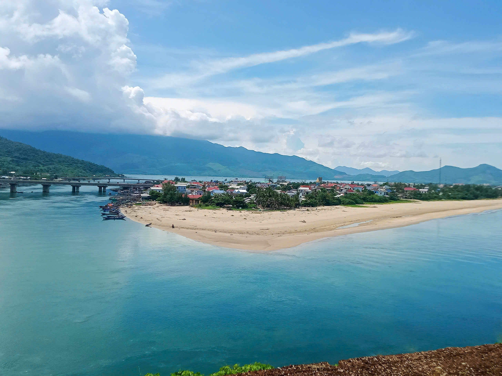

Vịnh Lăng Cô
⭐ 4.6 / 5
📍 Địa chỉ:Xã Chân Mây -Lăng Cô, TP Huế
🕒 Giờ mở cửa: Cả ngày
🎫 Giá vé: Miễn phí
📖 Giới thiệu
Vịnh Lăng Cô là một trong những vịnh biển đẹp nhất Việt Nam, nằm giữa đèo Hải Vân và đầm Lập An thơ mộng. Nơi đây nổi tiếng với bãi cát trắng dài, làn nước trong xanh và khung cảnh thiên nhiên hùng vĩ.
Với vẻ đẹp hoang sơ, khí hậu mát mẻ và không gian yên bình, vịnh Lăng Cô là điểm nghỉ dưỡng hấp dẫn đối với du khách trong nước và quốc tế. Đây cũng là nơi lý tưởng để tắm biển, ngắm bình minh và thưởng thức hải sản tươi ngon.
⚠️ Lưu ý
🏊 Chỉ tắm ở khu vực an toàn.
🌤️ Mang kem chống nắng khi đi ban ngày.
🚯 Không xả rác xuống biển.
📷 Giữ gìn cảnh quan thiên nhiên.
🏯 Điểm nổi bật
● Bãi biển Lăng Cô: Nước trong, cát trắng mịn.
● Đầm Lập An: Khung cảnh thơ mộng gần vịnh.
● Đèo Hải Vân: Cung đường ngắm cảnh nổi tiếng.
● Hải sản tươi sống: Đặc sản hấp dẫn du khách.
● Khu nghỉ dưỡng ven biển: Không gian thư giãn cao cấp.
📸 Gợi ý tham quan
● Ngắm bình minh hoặc hoàng hôn trên biển.
● Thưởng thức hải sản địa phương.
● Kết hợp đi đèo Hải Vân và đầm Lập An.
● Chụp ảnh check-in tại bãi biển dài tuyệt đẹp.